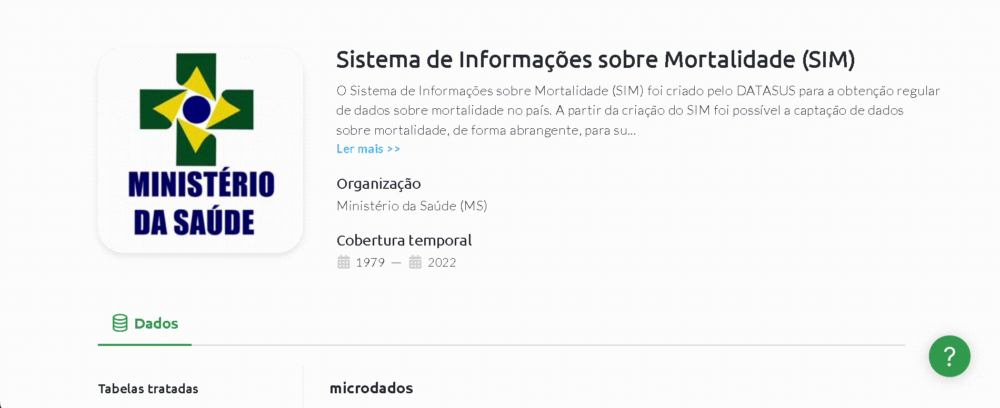
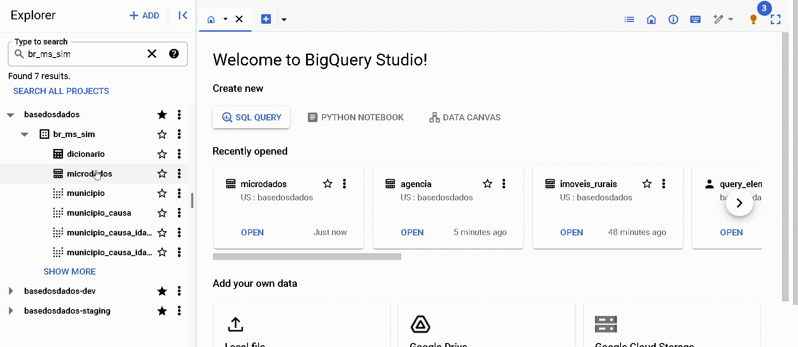

BigQuery
O BigQuery é o um serviço de banco de dados em nuvem da Google. Você faz consultas ao banco em SQL direto do navegador com:
-
Rapidez: Mesmo queries muito longas demoram apenas minutos para serem processadas.
-
Escala: O BigQuery escala magicamente para hexabytes se necessário.
-
Economia: Todo usuário possui 1 TB gratuito por mês para consulta aos dados.
Pronto(a) para começar? Nesta página você encontra:
Primeiros passos
Antes de começar: Crie o seu projeto no Google Cloud
Para criar um projeto no Google Cloud basta ter um email cadastrado no Google. É necessário ter um projeto seu, mesmo que vazio, para você fazer queries em nosso datalake público.
- Acesse o Google Cloud. Caso for a sua primeira vez, aceite o Termo de Serviços.
- Clique em
Create Project/Criar Projeto. Escolha um nome bacana para o projeto. - Clique em
Create/Criar
Por que eu preciso criar um projeto no Google Cloud?
A Google fornece 1 TB gratuito por mês de uso do BigQuery para cada projeto que você possui. Um projeto é necessário para ativar os serviços do Google Cloud, incluindo a permissão de uso do BigQuery. Pense no projeto como a "conta" na qual a Google vai contabilizar o quanto de processamento você já utilizou. Não é necessário adicionar nenhum cartão ou forma de pagamento - O BigQuery inicia automaticamente no modo Sandbox, que permite você utilizar seus recursos sem adicionar um modo de pagamento. Leia mais aqui.
Acessando o datalake da basedosdados
O botão abaixo via te direcionar ao nosso projeto no Google BigQuery:
Agora você precisa fixar o projeto da BD no seu BigQuery, é bem simples, veja:
!!! Warning A opção Fixar um projeto pode aparecer também como Marcar projeto com estrela por nome

Dentro do projeto existem dois níveis de organização dos dados, datasets (conjuntos de dados) e tables (tabelas), nos quais:
- Todas as tabelas estão organizadas dentro de cojuntos de dados, que
representaam sua organização/tema (ex: o conjunto
br_ibge_populacaocontém uma tabelamunicipiocom a série histórica de população a nível municipal) - Cada tabela pertence a um único conjunto de dados (ex: a tabela
municipioembr_ibge_populacaoé diferente demunicipioembr_bd_diretorios)

Caso não apareçam as tabelas na 1ª vez que você acessar, atualize a página.
Faça sua primeira consulta!
Que tal fazer uma consulta simples? Vamos usar o Editor de Consultas do BigQuery para ver as informações sobre municípios direto na nossa base de diretórios brasileiros. Para isso, copiar e colar o código abaixo:
SELECT * FROM `basedosdados.br_bd_diretorios_brasil.municipio`
Só clicar em Executar e pronto!

Dica
Clicando no botão 🔍 Consultar tabela/Query View, o BigQuery cria
automaticamente a estrutura básica da sua query em Query Editor/Editor
de consultas - basta você completar com os campos e filtros que
achar necessários.
Entenda o uso gratuito do Big Query BQ
Está seção é dedicada a apresentar dicas de como reduzir custos de processamento para aproveitar ao máximo os dados da BD!
Para usuários que acessam os dados em projetos públicos como o da Base dos Dados o único tipo de custo associado se refere ao custo de processamento das consultas. A notícia boa, como mencionado acima, é que todo usuário possui 1 TB gratuito por mês para consultar livremente os dados do maior data lake público do Brasil. Se você ainda não possui um projeto no BQ consulte a sessão acima para criá-lo.
- Conhecer o básico da interface do BQ é importante para o entendimento do artigo. Caso você não tenha familiariadade ou queria revisitar a interface, sugerimos 3 trilhas:
- Nosso guia utilizando as tabelas da RAIS - Relação Anual de Informações Sociais
- Nosso acervo de vídeos no youtube
- A introdução a interface feita pelo Google
Veja como usufruir ao máximo das consultas gratuitas
Nesta seção, apresentamos algumas dicas simples para reduzir os custos das consultas no Big Query e aproveitar ao máximo os dados da BD! Antes de partir para os exemplos, apresentaremos o mecanismo básico de previsão de custos de processamento de consultas no Big Query (BQ).
Estimativas de custos
No canto superior direito da interface do BQ é informado um aviso com estimativa do custo de processamento que será cobrado do seu projeto apos a execução da consulta.

-
Este é o mecanismo básico e prontamente acessível de previsibilidade dos custos de processamento. Infelizmente, não funciona para todas as tabelas. Por motivos de limitação interna do próprio Big Query, consultas à tabelas específicas não exibem estimativas de custos. É o caso das tabelas que possuem Row Access Policy. Isto é, tabelas onde o número de linhas acessíveis é limitada a depender do usuário. Este é o caso das tabelas que fazem parte do serviço BDpro
-
Exemplo da tabela
agenciado conjuntobr_bcb_estban.
 { width=100% }
{ width=100% }
DICA 1: Selecione somente as colunas de interesse
-
A arquitetura do Big Query utiliza o armazenamento orientado a colunas, isto é, cada coluna é armazenada separadamente. Esta característica tem uma implicação clara quanto aos custos de processamento: quanto mais colunas forem selecionadas, maior será o custo.
-
Evite: Selecionar colunas em excesso
SELECT *
- Prática recomendada: selecione somente as colunas de interesse para reduzir o custo final da consulta.
SELECT coluna1, coluna2
microdados do conjunto br_ms_sim.
- Sem seleção de colunas: custo estimado 5.83 GB
- Selecionando 3 colunas: custo estimado 0.531 GB (531 MB)
SELECT sequencial_obito, tipo_obito, data_obito FROM `basedosdados.br_ms_sim.microdados`
- Para entender mais a fundo a arquitetura colunar, consulte a documentação oficial do Big Query
DICA 2: Utilize colunas particionadas e clusterizadas para filtrar os dados
-
As partições são divisões feitas em uma tabela para facilitar o gerenciamento e a consulta dos dados. No momento de execução da consulta, o Big Query ignora linhas que possuem um valor da partição diferente do utilizado no filtro. Isto normalmente reduz significativamente a quantidade de linhas lidas e, o que nos interessa, reduz o custo de processamento.
-
Clusters são agrupamentos organizados em uma tabela com base nos valores de uma ou mais colunas especificadas. Durante a execução de uma consulta, o BigQuery otimiza a leitura dos dados, acessando apenas os segmentos que contêm os valores relevantes das colunas de cluster. Isso significa que, ao invés de escanear toda a tabela, apenas as partes necessárias são lidas, o que geralmente reduz a quantidade de dados processados e, consequentemente, reduz o custo de processamento.
-
Como saber qual coluna foi utilizada para particionar e clusterizar uma tabela específica?
-
Pelos metadados na página de tabela no site da BD

-
Note que o campo Partições no Big Query elenca tanto as partições quanto os clusters.
-
Pelos metadados na página de 'Detalhes' no Big Query

-
Note que são elencadas ambas informações: partições e clusters. Neste caso, a coluna ano foi definida como partição e a coluna sigla_uf como cluster.
-
Prática recomendada: sempre que possível, utilize colunas particionadas e clusterizadas para filtrar/agregar os dados.
-
Exemplo
- Consulta utilizado a coluna particionada como filtro:
SELECT sequencial_obito, tipo_obito, data_obito FROM `basedosdados.br_ms_sim.microdados` where ano = 2015 - custo estimado: 31.32 MB. A combinação de técnicas de seleção de colunas e filtro utilizando partição reduziu o custo estimado da consulta inicial de 5.83 GB para somente 31.32 MB
DICA 3: Muita atenção ao realizar joins entre tabelas
- Avalie a real necessidade do JOIN
-
Certifique-se de que o join é realmente necessário para a análise que você está realizando. Às vezes, operações alternativas como subconsultas ou agregações podem ser mais eficientes.
-
Entenda a Lógica do JOIN
- Diferentes tipos de joins (INNER, LEFT, RIGHT, FULL) têm diferentes implicações de desempenho e resultado. Gastar um tempinho entendo a melhor opção para seu objetivo de análise pode ajudar a ter um controle de custos mais eficiente.
- Um dos problemas mais comuns é a multiplicação de linhas indesejadas no resultado final.
-
Para entender a fundo boas práticas e problemas recorrentes com joins sugerimos os guias SQL Joins na prática e Maximizando a Eficiência com JOIN em Consultas SQL para Combinar Tabelas
-
Utilize as dicas anteriores
- Selecione somente colunas de interesse
- Faça uso das colunas particionadas para filtrar os dados
- Atente-se a estimativa de custos antes de executar a consulta
Tutoriais
Como navegar pelo BigQuery
Para entender mais sobre a interface do BigQuery e como explorar os dados, preparamos um texto completo no blog com um exemplo de busca dos dados da RAIS - Ministério da Economia.
Cansado(a) da leitura? Temos também um vídeo completo no nosso Youtube.
Entenda os dados
O BigQuery possui um mecanismo de busca que permite buscar por nomes de datasets (conjuntos), tables (tabelas) ou labels (grupos). Construímos regras de nomeação simples e práticas para facilitar sua busca - veja mais.
Entenda o uso gratuito do Big Query (BQ)
Conectando com o PowerBI
O Power BI é uma das tecnologias mais populares para o desenvolvimento de dashboards com dados relacionais. Por isso, preparamos um tutorial para você descobrir como usar os dados do datalake no desenvolvimento dos seus dashboards.
Manuais e Cursos de SQL
Está começando a aprender sobre SQL para fazer suas consultas? Abaixo colocamos algumas recomendações usadas pela nossa equipe tanto no aprendizado quanto no dia-a-dia: